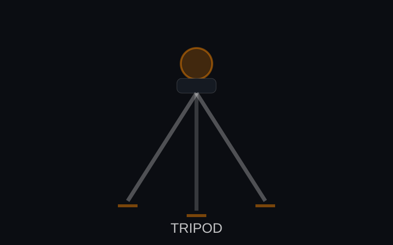

Карбонов туристически статив
Компактен и здрав. Отличен за преходи и градски снимки.
Стативи и опори
Стативът повишава остротата, позволява дълги експонации и ви помага да композирате прецизно. За видео флуидната глава си струва — плавните панорами са по-добри от треперещото снимане от ръка.

Компактен и здрав. Отличен за преходи и градски снимки.
Максимална стабилност за студийни осветителни схеми.
Плавно движение за интервюта и B-roll.
Бърза опора за спорт и събития.
| Клас | Макс. височина | Тегло | Най-подходящ за |
|---|---|---|---|
| Туристически | 150 cm | 1.2 kg | Планина и град |
| Стандартен | 165 cm | 1.8 kg | Обща фотография |
| Студиен | 180 cm | 3.2 kg | Големи светлини и тежки обективи |
| Видео | 170 cm | 2.6 kg | Плавни панорами и наклони |
Статив с товароносимост 2× теглото на камерата + обектива се усеща по-стабилен в реални условия.